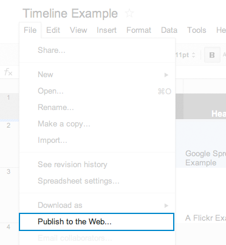

TimelineJS is an open-source tool that enables anyone to build visually,rich, interactive timelines. Beginners can create a timeline using nothing more than a Google spreadsheet. Experts can use their JSON skills to create custom installations, while keeping TimelineJS's core look and functionality.
It can pull in media from a variety of sources and has built-in support for Twitter, Flickr, Google Maps, YouTube, Vimeo, Vine, Dailymotion, Wikipedia, SoundCloud and more.
Get updates, tips and news by email. No Spam.
TimelineJS works on any site or blog. Make your own in four easy steps. (video tutorial)
Build a new Google Spreadsheet using our template. Drop dates, text and links to media into the appropriate columns. Note: Don't change the column headers, don't remove any columns, and don't leave any blank rows in your spreadsheet.

Under the File menu, select “Publish to the Web.”
In the next window, check “Automatically republish when changes are made.” Uncheck all other boxes. Click “start publishing.” This will give you the URL to embed in your HTML file.
Grab the embed code and paste it on your site where you want your TimelineJS to appear (just like a YouTube video).
Have you made a timeline? Let us know, and we might feature it here.
This project is hosted on GitHub, the largest code host in the world. We encourage you to contribute to the project and we value your feedback. You can report bugs and discuss features on the GitHub issues page, or ask a question on our Google Group
This Source Code Form is subject to the terms of the Mozilla Public License, v. 2.0. If a copy of the MPL was not distributed with this file, You can obtain one at http://mozilla.org/MPL/2.0/.
Map tiles by Stamen Design, under CC BY 3.0. Data by OpenStreetMap, under CC BY SA.